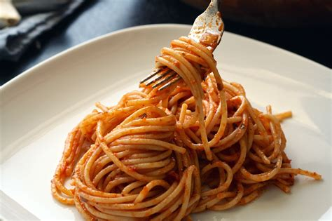

ESPAGUETE

Ingredientes
Modo de Preparo:
- Encha uma panela com água, leve ao fogo alto e tampe, deixe que a panela aqueça e quando estiver fervendo
coloque a água e o óleo;
- Coloque a tampa na panela e cozinhe o macarrão por mais 5 minutos ou até que ele esteja bem cozido;
- Doure a cebola e o alho.
- Desligue o fogo e com muito cuidado escorra a água do seu macarrão, logo em seguida jogue água gelada em
cima, pode ser da torneira mesmo;
- Com a mesma panela, ligue o fogo baixo e coloque mais uma colher de óleo junto da cebola e deixe cozinhar um
pouco;
- Acrescente o alho, mais um pouquinho de sal e a salsinha. Em seguida incorpore o molho de tomate e misture;
- Faça as correções de sal e pimenta, se achar necessário.
- Depois de alguns minutos refogando esse molho, acrescente o seu macarrão e misture.